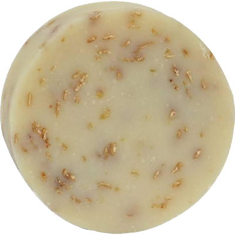

jabones organicos faciales
MIEL

Apto para cualquier tipo de piel, remueve celulas muertas, previene las arrugas. Reestructura la dermis, aliviando tambien las infecciones cutaneas.
ROMERO
Posee una gran cantidad de nutrientes, vitaminas y antioxidantes. Que ayudaran a mantener la piel elastica y firme. Sus propiedades astringentes, lo hacen muy eficaz, para eliminar poros, impurezas y lineas de expresion.
PEPINO Y MIEL
Hidrata y refresca la piel, es efectivo para las manchas. Retarda el envejecimiento, combate el acne y alivia las quemaduras solares.